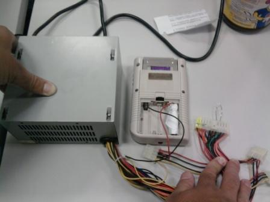
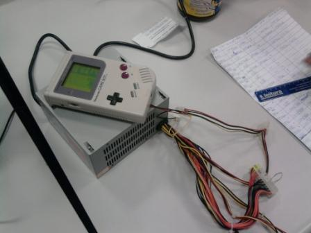

Game Boy - Ligando o GB com uma fonte de computador
 :::. Por Gigacom
-
Essa idéia maluca surgiu quase como uma piada. Me ofereceram um Game
Boy clássico para que eu comprasse, porém na hora
não tinha 4 pilhas à disposição para ligar
e testar o aparelho. Como realmente queria ver se o GB tava
funcionando, parti para o improviso.
:::. Por Gigacom
-
Essa idéia maluca surgiu quase como uma piada. Me ofereceram um Game
Boy clássico para que eu comprasse, porém na hora
não tinha 4 pilhas à disposição para ligar
e testar o aparelho. Como realmente queria ver se o GB tava
funcionando, parti para o improviso.
___________________________________________________________________
O segredo é simples.
Como o GB usa 4 pilhas de 1,5V cada, todas as pilhas juntas produzem 6V
ao todo. Se você pegar uma fonte de 6V, cortar o pino da fonte e
ligar os fios corretamente direto no console onde as pilhas são
encaixadas, o video game irá ligar normalmente. Claro que o GB
tem uma entrada especifica para fontes externas proprias do aparelho, mas como estava sem
essa bendita fonte na ocasião, resolvi apelar e ligar uma fonte
de computador no console mesmo .
.
Cada conector de uma fonte de PC possui 4 fios, sendo 2 pretos, 1 amarelo e o outro vermelho. Pelo fio amarelo passa uma corrente de 12V, no fio vermelho 5V e os 2 fios pretos são o terra. Uma coisa a se notar é que tanto o fio de 12V quanto o de 5V possuem uma potência muito maior do que 4 pilhas comuns, porém essa potência fica a diposição do circuito elétrico que será ligado nesses fios, e não nescessariamente é descarregado completamente no aparelho logo que se liga. Portanto não há problema em ligar um dispositivo que consuma apenas 1/10 da potência fornecida por esses fios, porém haverá falhas se o dispositivo pedir mais potência do que é possivel passar por ali.
Sendo assim, retirei o pino do fio vermelho e um fio preto de um dos conectores da fonte. Fiz um rolinho de papel para ajudar a fixar o fio vermelho (que é o que possui corrente, ou seja, é o + ou positivo) e coloquei o fio preto que é o terra no polo negativo.

Repare que na foto, usei apenas dois fios. Isso pode gerar duvidas para alguns, pois os outros contatos onde ficam as pilhas não são utilizados. Na verdade, há apenas um ponto de entrada para energia (que é o de cima, à direita) e um ponto de saída (o de cima à esquerda) que são respectivamente os polos positivo e negatico do GB. As pilhas na verdade são ligadas em série, fazendo com que a voltagem e potência de cada uma seja somada a das outras, gerando o total de 6V que passa pela entrada de energia, e é justamente os outros pontos que fazem essa ligação entre as pilhas. Como nesse caso não ha pilha alguma, liguei tudo diretamente.
Alguém
tambem pode perguntar: mas Giga, você tá ligando um fio de
5V em um lugar onde deveria haver 6V. Exato , porém a
potência que passa pelo fio à 5V compensa a falta do 1V, e
no fim a energia que o GB pede fica a mesminha.
, porém a
potência que passa pelo fio à 5V compensa a falta do 1V, e
no fim a energia que o GB pede fica a mesminha.
A fonte de um computador é ligada através de um sinal eletrico que passa por um fio de cor verde que está no conector principal (aquele de 20 ou 24 pinos). Portanto, conectando esse fio diretamente à qualquer fio terra (preto) a fonte irá ligar e ficará em funcionamento enquanto o fio verde estiver conectado ao terra. Para isso utilizei um clip comum, funcionou perfeitamente.
Bem, com a fonte ligada chega o momento de ligar o console. Mudo a chavinha do GB para ON e...

Tcharan!!! Tudo perfeito! O console ligou normalmente, não apresentou sinal algum de sobretensão . Deixei o GB ligado sozinho por um bom tempo (uma manhã inteira na verdade), funcionou perfeitamente.
Dureza mesmo seria ter que jogar sempre assim hehehe. Mas o experimento
serviu ao seu proposito, pude testar o aparelho que queriam me vender
e... bem, no fim das contas acabei não fechando negocio pois
tavam pedindo muito por ele
. Deixei o GB ligado sozinho por um bom tempo (uma manhã inteira na verdade), funcionou perfeitamente.
Dureza mesmo seria ter que jogar sempre assim hehehe. Mas o experimento
serviu ao seu proposito, pude testar o aparelho que queriam me vender
e... bem, no fim das contas acabei não fechando negocio pois
tavam pedindo muito por ele . Fim de papo.
. Fim de papo.
Acesse o Trombone e comente sobre essa matéria!


Um problema bastante comum em controles antigos é o mal funcionamento de um ou outro botão. A boa noticia é que tem como arrumar isso de um jeito facil facil :D